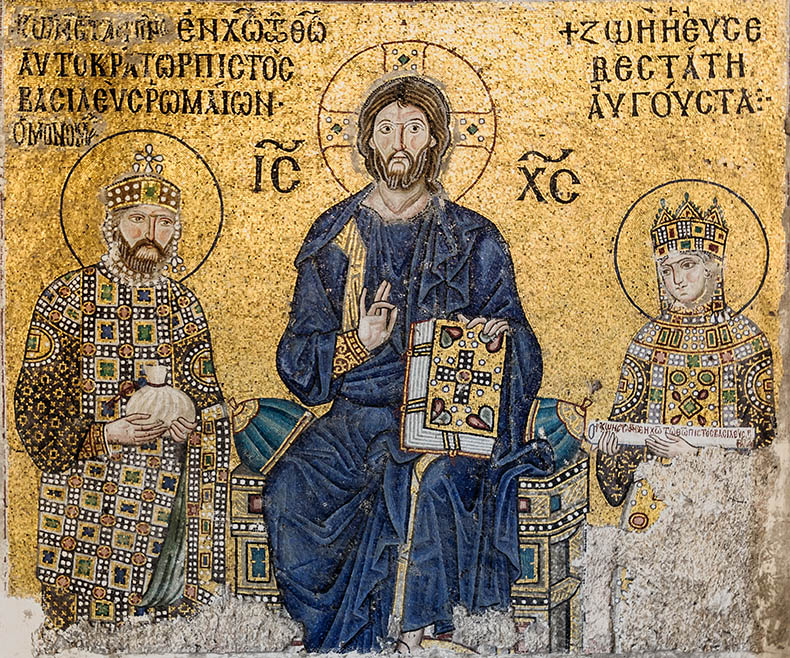
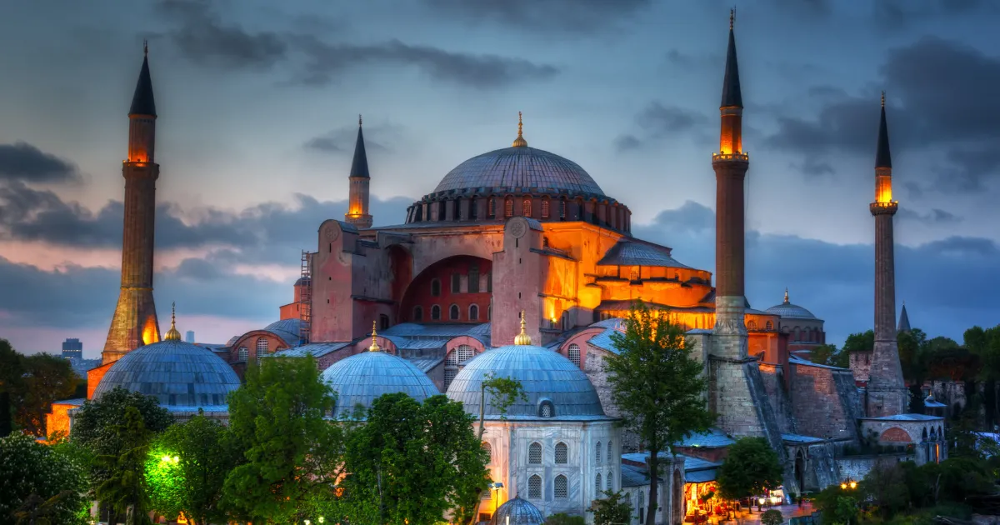

Everything To Know Before Visiting Hagia Sophia
Focused, practical guides built around real visitor questions: what to wear, when to go, what to see, how long it takes and how to book smarter.

Hagia Sophia Dress Code (2026 Guide)
What should you wear when visiting Hagia Sophia? Complete dress code guide for men, women, and children.

Best Time To Visit Hagia Sophia
Discover the best time to visit Hagia Sophia with local advice on crowds, mornings, afternoons, Fridays, and busy travel periods.
Hagia Sophia vs Blue Mosque: Which Should You Visit?
Compare Hagia Sophia and the Blue Mosque, including highlights, timing, atmosphere, photos, and the best order to visit.

How Long Does Hagia Sophia Take?
Learn how much time you need for Hagia Sophia, from a quick visit to a detailed visit with the upper gallery.

Can You Visit Hagia Sophia For Free?
Understand whether Hagia Sophia is free to visit, why rules can be confusing, and which visitor areas may require tickets.

Hagia Sophia Upper Gallery Guide
Is the Hagia Sophia Upper Gallery worth it? Learn what you see, best photo spots, and local advice before your visit.

Hagia Sophia History Explained Simply
A simple guide to Hagia Sophia's history from Byzantine cathedral to Ottoman mosque, museum period, and today.
Visiting Hagia Sophia With Kids
A family-friendly guide to visiting Hagia Sophia with children, including timing, comfort tips, and nearby attractions.

Hagia Sophia Photography Guide
Find the best photography spots in and around Hagia Sophia, including exterior views, upper gallery angles, and best light.

Top Things To See Inside Hagia Sophia
A focused guide to the top things to see inside Hagia Sophia, from the dome and mosaics to Ottoman calligraphy and the Upper Gallery.